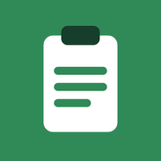

Installer « Chantier » sur l’iPad
Journal de chantier et feuille de temps · Beaudoin Capital · adresse : davidfujioka2.github.io/feuille-de-temps
1Vérifier les réglages de l’iPad
- Ouvrir Réglages.
- Toucher Apps › Safari.
- Désactiver Bloquer tous les cookies.
- Toucher Général › Stockage de l’iPad : garder au moins 2 Go libres.
- Ouvrir le Centre de contrôle (glisser du coin en haut à droite) : désactiver le verrouillage de la rotation.
- Se connecter au Wi-Fi.
Général
Écran et luminosité
Apps
Batterie
Safari
Moteur de recherche
Bloquer tous les cookies
Avancé
Réglages › Apps › Safari · « Bloquer tous les cookies » désactivé
2Ouvrir le site dans Safari
- Ouvrir Safari.
- Taper l’adresse : davidfujioka2.github.io/feuille-de-temps
- Attendre que le calendrier du Journal de chantier s’affiche.
Taper l’adresse dans la barre de Safari
3Ajouter l’app à l’écran d’accueil
- Toucher le bouton Partager (carré avec une flèche vers le haut). S’il n’est pas visible : toucher •••, puis Partager.
- Toucher Afficher plus.
- Toucher Sur l’écran d’accueil.
- Vérifier que Ouvrir en tant qu’app web est activé (vert).
- Laisser le nom Chantier.
- Toucher Ajouter.
a) Toucher Partager
Copier
Ajouter aux signets
Sur l’écran d’accueil⊞
Afficher plus
b) Afficher plus › Sur l’écran d’accueil
AnnulerSur l’écran d’accueilAjouter

ChantierOuvrir en tant qu’app web
c) Interrupteur vert, puis Ajouter
4Premier lancement (avec internet)
- Retourner à l’écran d’accueil.
- Toucher l’icône Chantier.
- Attendre que le calendrier s’affiche (l’app se copie sur l’iPad).
- Fermer l’app, puis la rouvrir une fois avec l’icône.
- À la première photo, toucher Autoriser pour l’appareil photo.
Photos
Safari
Réglages
OneDrive
Chantier
Toujours ouvrir avec l’icône Chantier
5Vérifier que l’app marche sans internet
- Ouvrir le Centre de contrôle, activer le mode Avion.
- Toucher l’icône Chantier.
- Le calendrier doit s’afficher.
- Désactiver le mode Avion.
En mode Avion, le calendrier s’ouvre quand même
6Tous les jours
- Ouvrir l’app avec l’icône Chantier, jamais dans Safari.
- Journal de chantier : choisir la journée dans le calendrier.
- Feuille de temps : onglet Feuille de temps en haut du calendrier.
- Mises à jour : ouvrir l’app une fois avec internet ; la nouvelle version s’affiche au lancement suivant.
Ne jamais supprimer l’icône Chantier : les données sont gardées dans l’iPad et seraient effacées.
7OneDrive : documents du bureau hors connexion
- Ouvrir l’App Store, installer Microsoft OneDrive.
- Ouvrir OneDrive, se connecter avec le compte de travail (@coreholdings.ca).
- Trouver le dossier du projet.
- Toucher ••• à côté du dossier.
- Toucher Rendre disponible hors connexion.
- Avant d’aller au chantier : ouvrir OneDrive sur le Wi-Fi quelques secondes pour recevoir les derniers fichiers.
- Icône nuage = pas téléchargé. Coche = disponible sans internet.
OneDrive — Mes fichiers
Documents•••
2565 Aird — Chantier•••
Photos•••
••• › Rendre disponible hors connexion
Si « Rendre disponible hors connexion » est gris : le dossier demande un compte de travail ou Microsoft 365. Avertir le bureau.
Illustrations simplifiées : les écrans réels de l’iPad peuvent varier légèrement selon la version d’iPadOS.